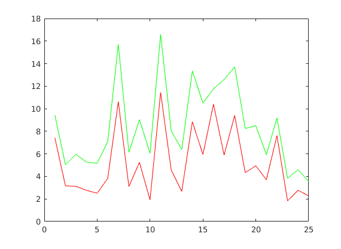

This code is to prove that compression is better using DCT rather than DFT
Contents
loop over all images
F = [16 11 10 16 24 40 51 61;
12 12 14 19 26 58 60 55;
14 13 16 24 40 57 69 56;
14 17 22 29 51 87 80 62;
18 22 37 56 68 109 103 77;
24 35 55 64 81 104 113 92;
49 64 78 87 103 121 120 101 ;
72 92 95 98 112 100 103 99];
for xx = 1:25
str = 'images/' + string(xx) + '.gif';
str = char(str);
image = imread(str);
This loop reconstructs image using DFT compression
for i = 1:8:512
for j = 1:8:512
rec1 = fft2(image(i:i+7,j:j+7));
k = 8;
for u = 1:8
for v = 1:8
if v > k
upper(u,v) = 0;
else
upper(u,v) = rec1(u,v);
end
end
k = k - 1;
end
im1(i:i+7,j:j+7) = abs(ifft2(upper));
end
end
This loop reconstructs image using DCT compression
for i = 1:8:512
for j = 1:8:512
rec1 = myDCT(image(i:i+7,j:j+7), create_dct_mat());
k = 8;
for u = 1:8
for v = 1:8
if v > k
upper(u,v) = 0;
else
upper(u,v) = rec1(u,v);
end
end
k = k - 1;
end
im2(i:i+7,j:j+7) = myIDCT(upper,create_dct_mat());
end
end
store the RMSE errors for both the reconstructed images
error(xx) = RMSE(uint8(im1), image);
error2(xx) = RMSE(uint8(im2), image);
end
plot the graph error vs image number for both methods
X = 1:25;
plot(X,error,'g',X,error2,'r');
disp('Thus we can say that DCT compression is better that DFT compression');
Thus we can say that DCT compression is better that DFT compression
